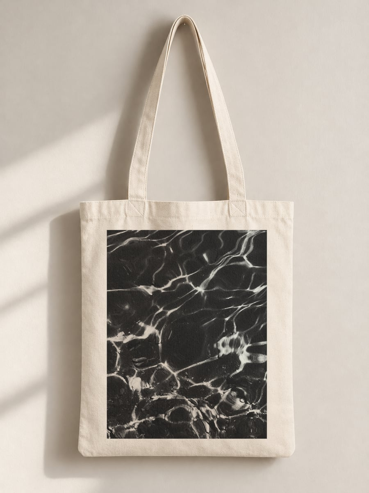
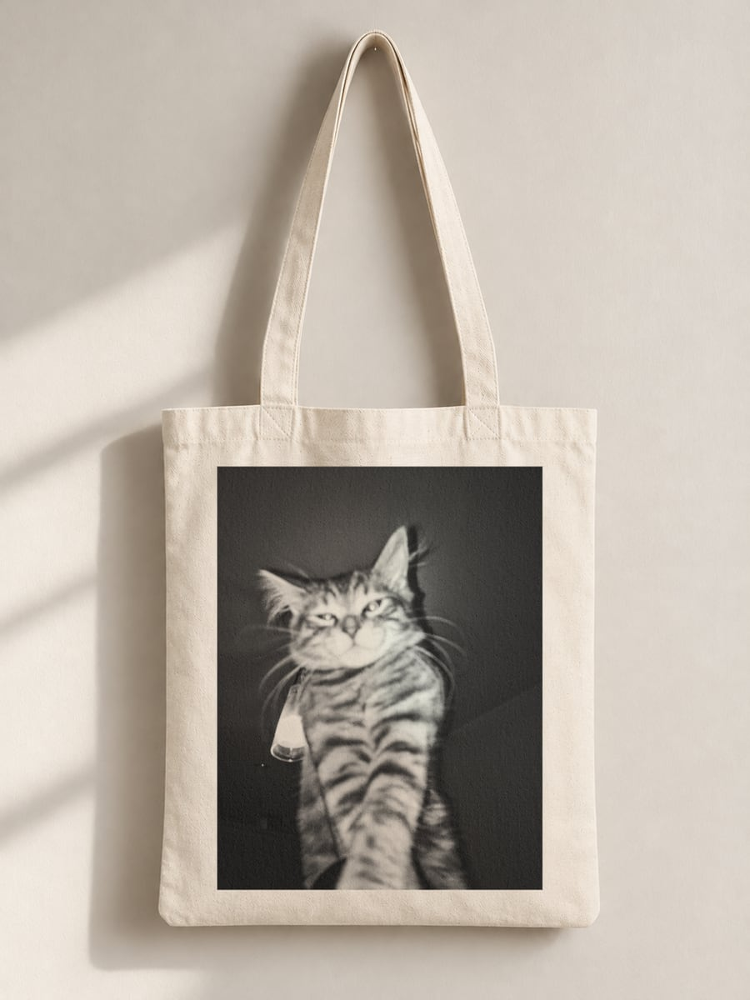
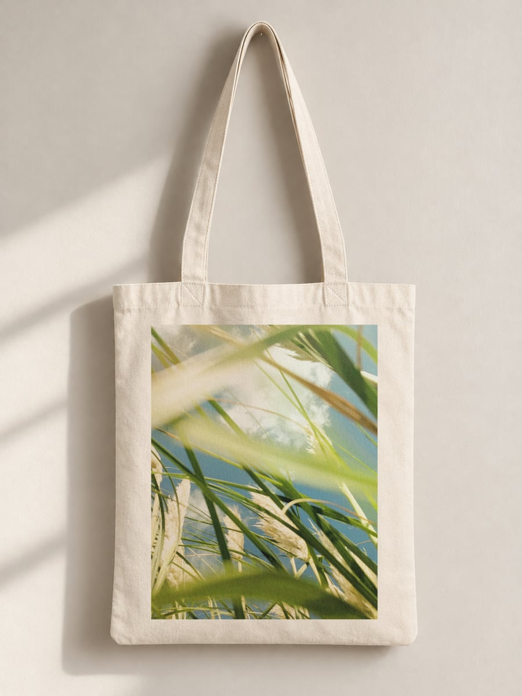

Shop
Tote bags printed with my artwork, each made to order.
To order, email contact@juechen.uk with the product code below.






Tote bags printed with my artwork, each made to order.
To order, email contact@juechen.uk with the product code below.


